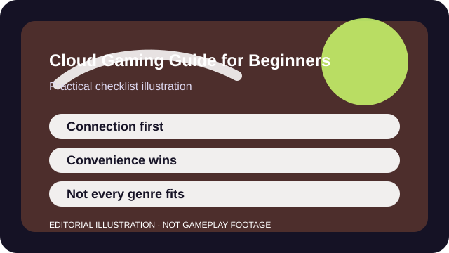

QUICK ANSWER
The short version
Test with a forgiving game first, check the network honestly, and treat cloud play as a convenience tool—not a universal replacement for local hardware.
Cloud gaming solves some real problems: storage limits, weak local hardware, and quick access on secondary devices. It also adds new constraints such as server distance, compression artifacts, and network dependency.
The right question is not whether cloud gaming is good or bad. It is whether the convenience it gives you is worth the performance ceiling it imposes for the kinds of games you actually play.

CHECKLIST
What to confirm before you change anything
- Test the connection on the actual device and network you plan to use, not on a better one nearby.
- Confirm controller, keyboard, browser, or app support before you subscribe.
- Estimate data use and whether your connection is shared with other heavy traffic.
- Check which games are really in the library rather than assuming catalog parity.
- Choose one forgiving title for the first test instead of a twitch-sensitive competitive shooter.
This checklist turns cloud gaming into an honest comparison instead of a fantasy about perfect play from anywhere.
SCENARIO
When you want to play a big live game on weak hardware or while traveling
Cloud play is tempting when your local device is underpowered or the install would eat too much storage. In those moments, the service feels like a shortcut around every problem. It is a shortcut around some of them, but never around latency itself.
Testing with a lower-stakes title first reveals whether the connection is predictable enough for your habits. If the image stutters or the controls feel floaty there, a more demanding game will only exaggerate the problem.
PROCESS
A repeatable way to work through it
Start with the connection, not the graphics
Stable latency and low packet loss matter more than the marketing resolution target.
Pick the right first game
A turn-based, solo, or slower-paced game gives you a fair baseline before you test higher-pressure genres.
Compare convenience against ownership
A cloud catalog or subscription only helps if the games you care about are actually there and usable the way you want.
Know when local play is still better
Fast shooters, unreliable travel Wi-Fi, or highly competitive play often expose the service ceiling quickly.
Cloud gaming succeeds when you understand exactly what role it fills: backup device, travel option, quick access, or main platform for a specific slice of your library.
COMMON MISTAKES
What usually makes the problem worse
Evaluating from the best-case network only
The home office connection might be perfect while your usual room or travel setup is not.
Testing a twitch shooter first
If you lead with the hardest genre to satisfy, you learn only that the ceiling exists.
Ignoring recurring cost creep
A cheap monthly service can overlap with several other subscriptions before you notice.
SUCCESS CRITERIA
How to know the change actually worked
- The controls feel predictable enough for the genres you actually play there.
- Visual artifacts stay within your tolerance instead of constantly distracting you.
- You know which games belong in the cloud and which should stay local.
- The subscription or service cost still feels sensible after the novelty wears off.
Cloud gaming becomes useful the moment you stop asking it to do everything. Once you assign it a clear role, the tradeoffs feel manageable instead of mysterious.
SOURCES AND LIMITS
Where to verify live details
- Distance to servers and network quality set a hard ceiling that local tweaks cannot remove.
- Competitive latency demands may remain incompatible with your connection even if casual play is fine.
- Service libraries and device support can change after launch or region updates.
Menu names, defaults, and device behavior can change after updates. Use the linked official support surfaces for the current live details and keep this guide for the process around them.